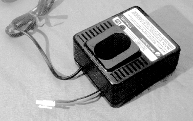
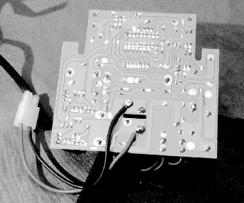
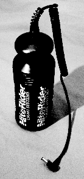
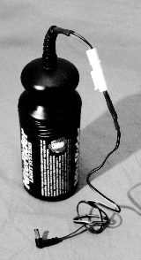

The article is in two parts. Part 1 includes a brief background on fast charging and describes how my boyfriend and I modified a Black and Decker "1 hour" power tool charger to work with bike batteries. Part 2 is Marty Goodman's excellent article on DeWalt power tool chargers (DeWalt and Black & Decker chargers are made by the same company).
The best way to charge a NiCads battery is with a constant current. This is easily arranged, however the problem is when to stop charging it.
The rate you charge a battery at is given in multiples of C, where C is the capacity of your battery in amp-hours. For example, C/2 for a 5 amp-hour battery would be a current of 2.5 A. If you charge the battery at a rate higher than C/10, and you don't stop charging it when the battery is full, the excess energy goes into producing heat, and this can permanently damage your battery. If you charge the battery at a rate lower than C/10 (which is the rate used by most chargers that come supplied with bike lights), then the excess heat is dissipated quickly enough that it won't do any permanent damage to the battery. However you can still get "voltage depression" effects in your battery. (Read this to find out all about voltage depression.) Now, if your battery is empty when you attach it to a C/10 charger, it will be charged in about 14 hours (you might think it should be 10 hours, but charging isn't 100% efficient), so if you unplug it then you'll be fine, right? Well, no, because your battery will never be completely empty when you go to recharge it. (If it is, then you're doing something very very wrong, as fully discharging a battery is a very good way to kill it.) So you need to reduce the charge time proportionally to account for a partly charged battery. However, you probably don't have a good handle on how much capacity you've used up, especially if you've been stopping and starting (and turning off lights when stopped), and if you've been using varying light levels.
 modified charger So what you need is a smart charger. Smart chargers detect when a battery is full and turn off the power (actually, they usually switch to a very low current to prevent self-discharge). You can detect when the battery is full by measuring the temperature of the battery or voltage of the battery. The temperature version works exactly because after a battery is full, addition current sent into it is converted to heat. So when the temperature rises, the battery is full, so turn off. The voltage relies on an interesting feature of NiCads: as you charge it, the voltage of the battery steadily rises. When the battery is full, the voltage drops off slightly! So you measure the voltage of the battery at regular intervals and stop charging when you find that the voltage has dropped between measurements.
The ideal charger would use both temperature and voltage measurements to decide when to turn off, but batteries that you get with bike lights don't have thermometors (technically, thermistors) in them, so you're stuck with the voltage-only approach.
 cord soldered to charger cicruit board DeWalt power tool chargers to the rescue. Lots of power tools (drills, screwdrivers, saws, etc) run on rechargeable NiCad power packs. To recharge them, they sell very nice chargers. These chargers have a slot in them especially shaped to hold the case of the power tool battery. To use them to charge bike batteries, you just have to open up the case and solder on a cord that matches your battery.
See below (Part 2) for the guide to DeWalt chargers. Make sure you get one with only two contacts; if you find a charger with more than two, they are sensing temperature, and this won't work for your battery.
Each DeWalt charger puts out a certain amount of current. They work best when this current is between about C and C/3.5 amps, where C is the capacity of your battery in amp-hours. Put another way, if your charger puts out current a, then you can charge batteries with a capacity between a and a * 3.5 amp-hours. Since my Black & Decker charger puts out 1.9 A, I can use it to charge batteries with capacity between 1.9 amp-hours and 6.65 amp-hours.
These chargers can be used for a very wide range of voltages. Although the power tool batteries that my charger was intended to charge have a limited range of voltages (7.2V to 13.2V), the charger is actually capable of charging batteries from 1.2V to 24V (according to the included instruction manual).
  battery before battery after Preventing shocks. In attaching the cord to the charger, we took Marty's warning about the shock hazard (see below in Part 2) very seriously, especially as the mains electricity here in the UK is 240V. We wanted to make sure that we couldn't touch the contacts of the battery or charger while the charger was in operation. A careful inspection of the barrel connectors that attach to our lights (VistaLite and NiteRider) indicated that this connector couldn't be used for charging. So this is the solution we came up with. We use race pack connectors (used for connecting NiCad battery packs to remote controlled cars) to attach the battery to the charger. They are good for this purpose because all metal bits are surrounded by insulating plastic. When the batteries are done charging, we attach a power cord (which has a race pack connector on one end and the appropriate barrel connector on the other end) to the battery and plug this into the lighting heads. This has the advantage that, in addition to making charging much safer, we can now swap our power cords around easily. We have three power cords made up: two with only one plug on the end (one with expanding "curley cord", one with straight cord), and one that ends in two plugs for powering two lighting heads.
Our thus modified charger works very well, except for the annoying fact that our Black & Decker "1 hour" charger has a timeout at 1.5 hours, at which point it holds the LED charge indicator steady to say that the charge is done. Thus if we just plug in the battery and leave it to charge for several hours, when we come back we don't know if it has timed out or if it terminated the charge because the battery was full. The best solution seems to be to set the charger going, and to come back about every hour and check it. If it's still charging, we unplug the battery briefly to reset the timer before plugging it in to continue the charge. This annoying feature seems to be unique to my Black & Decker charger. Many people on the bikecurrent mailing list have made bike battery chargers out of DeWalt chargers and no one else has reported having this problem.
(c) Marty Goodman May 1998
(may be freely re-published only in NOT FOR PROFIT printed and electronic publications / services)As many on BikeCurrent know, I've been recommending DeWalt power tool chargers as a third party smart NiCd bicycle lighting battery recharger for quite a while. I've also noted that Black and Decker makes identical equivalent chargers.
More bike and light articlesThe DC output to the NiCd battery of these power tool chargers is HOT with respect to ground, to the tune of 110 volts AC, making it imperative that modified chargers be set up and used with care and only by knowledgeable tinkerers. Touching the charger output, or touching an exposed battery contact while the battery is connected to the charger, can result in a startling, or painful, or even potentally (tho fortunately very rarely) LETHAL shock IF you are also in contact with an earth ground (cold wet stone floor, cold water pipe, etc.) at the same time you touch the charger or battery contact. Modified chargers should be set up in a controlled area where children, pets, or curious adults ignorant of the dangers they pose cannot get at them! And should be used BY the tinkerer with care and respect for this potential danger. A knowledgeable tinkerer who is highly safety conscious can eliminate this shock hazzard by powering their DeWalt 9104, 9106, 9107, or 9108 charger (or equivalent Black and Decker charger) via a 110 volt to 110 volt AC isolation transformer.
The model number I've mentioned most over the last two years was the DW9106. However, the venerable DW9106 has been discontinued. Some hardware stores and chains that carry DeWalt stuff MAY still have the 9106, and some of those MAY be closing them out at extra low prices. The normal retail price on the DW9106 was around $45. I picked up a couple for $10 each a while back from one chain that was closing them out.
The DW9104 is IDENTICAL to the 9106, except for one sensing resistor on the circuit board. This resistor, R2, is 13,000 ohms in the DW9016, which is rated as having a 1.9 amp charging current. R2 is 15,000 ohms in the DW 9104, which is rated as having a 1.5 amp charging current.
Both the DW9104 and 9106 are rated to handle batteries from 7.2 thru 14.4 volts, tho in practice I've used them successfully with batteries as low as 4.8 volts, and the technician at DeWalt, when I called about this, told me he thought they could be used down to a single cell (1.2 volt) battery, but that in any case the could be used with confidence on batteries down to 4 cells (4.8 volts), and that the rating on the package reflected ONLY the fact that the batteries made by DeWalt designed to fit in the hole in the charger were made in votlages ranging from 7.2 to 14.4 volts. NOT due to 7.2 volts being the lower limit of what the charger could handle.
I believe DeWalt made yet another model of charger for this line of power tools, the DW 9105, I think, which was designed to run off 12 volts DC. If you can get such a charger at a good price, DO SO. For by powering it off a linear 12 volt DC wall source, you will eliminate any shock hazzard! And you will have the added advantage of being able to use it on the road, powering it off your automobile's battery.
DeWalt switched to a different physical style of battery and battery contact. These batteries had higher power capacities, and to charge them quickly enough DeWalt completely redesigned their charger to put out almost twice as much current as the old ones, as well as redesiging the hole in the charger and the battery contact to fit the new line of power tool batteries.
Their DW9107 was the first charger they put out (that I know of) in this series. It was rated to handle batteries from 9.6 thru 14.4 volts, but works fine in my experience with batteries at least down to 6 volts (and probably lower. It puts out 2.8 amps of charging current during fast charging.
The current model in this line that's being sold is the DW9108. This model puts out 2.8 amps of current when fast charging, and is rated to handle batteries from 9.6 volts thru 18 volts. This current model is available at Home Depot priced at $50.00 plus tax. Its circuit board is very similar to, but NOT identical to, that of the 9107. There's an extra chip on the board, and some minor circuit changes. I have very limited experience with the 9108, but have every reason to believe it will handle the same range of batteries as the 9107.
I don't currently know what, if any, charger is made by DeWalt in the same line as the DW 9107 and DW 9108 that will run off 12 volts DC. If they DO make one, it would be desireable because of the easy ability to remove the shock hazzard from the charger, and to run the charger off a car battery. But it is also likely to be quite expensive, as such a charger would require an added DC to DC converter to step UP the 12 volts DC for charging purposes.
Summary
DeWalt power tool chargers that run off 110 volts AC:
fast charge stated battery model current status voltage range ------- ------------ -------------- --------------- DW9104 1.5 amps discontinued 7.2 - 14.4 DW9106 1.9 amps discontinued? 7.2 - 14.4 DW9107 2.8 amps discontinued 9.6 - 14.4 DW9108 2.8 amps current model 9.6 - 18.0Note:
The case of all four of these models, and of the Black and Decker equivalent chargers, is held together with four SECURITY type torx screws. You need a T15 size SERCURITY type (hole drilled in the middle of the bit) torx bit to open these cases up. Such bits are widely available at well-stocked hardware stores these days (tho in times past were hard to obtain!).